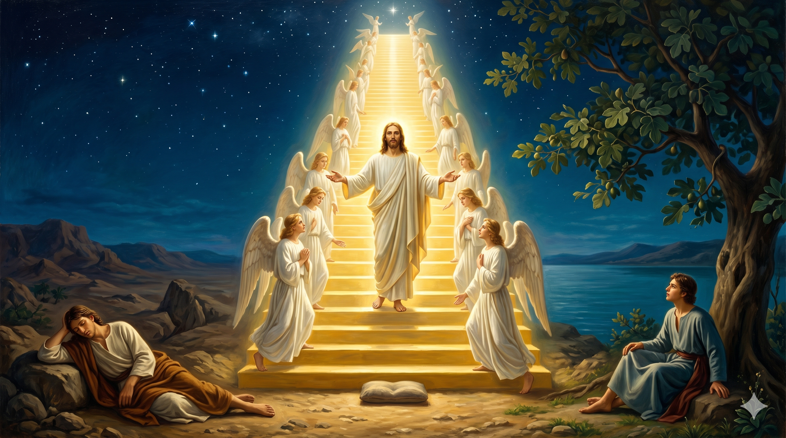

밤의 광야 위로 한 사닥다리가 하늘 끝까지 솟아 있다. 그 사다리 위에는 흰옷 입은 천사들이 오르내리고, 그 한가운데 — 사다리 자체이신 한 분이 두 손을 펼치고 서 계신다. 그분의 발은 한 사람의 베개 돌 위에, 그분의 머리는 별들 너머에, 그리고 사다리 한 면은 야곱의 광야로, 다른 한 면은 갈릴리 호숫가 무화과나무 아래로 동시에 내려와 있다. 시대가 다른 두 사람이, 같은 하늘 길 위에서 같은 한 분을 바라본다.
또 이르시되 진실로 진실로 너희에게 이르노니 하늘이 열리고 하나님의 사자들이 인자 위에 오르락내리락 하는 것을 너희가 보리라 하시니라 — 요한복음 1:51
예수께서 나다나엘에게 하신 그 한 마디는, 사실 사천 년 전 어느 광야의 베개 돌 위에서 잠든 한 도망자의 꿈을 정확히 가리키고 있었습니다. 야곱이 형의 살의를 피해 외삼촌의 집으로 도망가던 그 길고 막막한 첫 밤, 그는 돌 한 개를 베고 누워 잠이 들었습니다. 그리고 꿈에서 본 것은 — 땅 위에 서서 그 꼭대기가 하늘에 닿은 한 사닥다리였습니다(창 28:12). 천사들이 그 위로 오르내렸고, 가장 위에는 여호와께서 서 계셨습니다. 그 새벽에 잠에서 깬 야곱은 두려움 속에 외쳤습니다. "여호와께서 과연 여기 계시거늘 내가 알지 못하였도다 … 이는 다름 아닌 하나님의 집이요 이는 하늘의 문이로다"(창 28:16–17). 그가 베개 삼았던 그 돌이 기둥이 되었고, 그 자리는 "벧엘"(하나님의 집)이 되었습니다. 한 도망자에게 하늘의 문이 열린 그 새벽이, 사천 년 후 한 청년 나다나엘의 인생에서 다시 한 번 열리는 그 순간을 우리는 요한복음 1장에서 만납니다.
예수님의 말씀의 무게는 정확히 한 단어 위에 실려 있습니다 — "인자 위에." 야곱이 본 사닥다리는 사실 한 분이었습니다. 천사들이 오르내린 그 통로는 나무 사다리가 아니라, 장차 이 땅에 오실 한 분의 어깨 위였습니다. 그분이 사닥다리이시며, 그분이 하늘의 문이시며, 그분이 곧 벧엘 — 하나님의 집입니다. 야곱은 자신이 본 그 광경의 의미를 다 알지 못한 채 돌을 세우고 길을 떠났지만, 사천 년 후 무화과나무 아래에 있던 한 청년에게 그 사닥다리의 정체가 마침내 밝혀졌습니다. 곧 인자, 사람의 아들, 예수 그리스도. 그분 안에서 하늘과 땅이 다시 연결되었고, 그분 안에서 모든 도망자가 자기 베개 돌 위에서 하늘의 문을 만나게 되었습니다. 야곱의 벧엘은 그러므로 한 시대의 한 장소가 아니라, 모든 시대의 모든 장소가 됩니다. 인자가 계신 곳, 그곳이 곧 벧엘입니다.
베개 돌 위에 누운 한 청년의 머리맡으로, 무화과나무 잎 한 장이 떨어져 내려앉는다. 잎 위에 비친 그림자는 십자가의 윤곽 — 야곱의 사닥다리가 결국 한 그루 나무에서 완성되는 거룩한 비밀이 한 장면 안에 겹쳐 있다.
야곱이 사닥다리를 본 그 광야는 그가 가장 절망한 자리였습니다. 형의 손에 죽을 뻔하다가 도망친 첫날 밤, 베개로 삼을 돌 한 개밖에 없었던 빈손의 새벽. 바로 그 자리에서 하늘이 열렸습니다. 우리는 자주 착각합니다 — 하늘이 열리는 곳은 화려한 성전이거나, 아름다운 절기이거나, 큰 예배의 자리일 거라고. 그러나 성경은 우리에게 한결같이 알려 줍니다. 하늘이 가장 자주 열리는 곳은, 베개 돌 하나 외에는 가진 것이 없는 가장 낮고 외로운 그 자리입니다. 오늘 당신이 누운 그 자리가 광야처럼 느껴진다면, 도리어 가장 가까이에서 사닥다리를 만날 수 있는 자리에 와 있는 것일지도 모릅니다. 두려워하지 마십시오. 인자가 그 사닥다리이십니다. 당신과 하늘 사이에는 더 이상 막힌 벽이 없습니다 — 한 분이 그 사이에서 두 손을 펼치고 서 계십니다.
또 하나 — 예수님은 나다나엘에게 "너희가 보리라"고 미래형으로 말씀하셨습니다. 곧 사닥다리는 한 번의 환상으로 끝나는 일이 아니라, 그리스도를 따르는 모든 사람의 평생에 걸쳐 계속 보일 사건이라는 뜻입니다. 우리는 매일 사닥다리를 봅니다. 우리의 작은 기도가 하늘에 닿고, 그 응답이 다시 우리의 일상으로 내려옵니다. 우리의 회개가 위로 올라가고, 그분의 용서가 다시 아래로 내려옵니다. 우리의 한 모금 눈물이 위로 올라가고, 그분의 한 마디 위로가 다시 아래로 내려옵니다. 야곱은 한 번 보았지만, 우리는 매일 봅니다. 그러나 우리도 야곱처럼 그 사실을 알지 못한 채 살아갈 때가 너무 많습니다. 오늘 한 번, 베개 돌을 베고 잠든 그 첫날의 야곱처럼, 두려운 새벽에 눈을 들어 외쳐 보십시오 — "여호와께서 과연 여기 계시거늘 내가 알지 못하였도다." 그 한 마디가 당신의 광야를 벧엘로 바꿉니다.
사닥다리는 나무가 아니라 한 분이셨습니다.
인자가 계신 그 자리, 그곳이 당신의 벧엘입니다.
오늘 당신의 광야에서, 베개 돌을 베고 한 번 눈을 들어 보십시오 — 하늘은 이미 열려 있습니다.